인터넷정보관리사-2급 (2016-09-10 기출문제)
1과목: 인터넷의 이해
1. 다음 중 인터넷에 대한 설명으로 가장 거리가 먼 것은?
- TCP/IP를 표준 프로토콜로 이용한다.
- 시간과 공간의 제약 없이 서비스를 이용할 수 있다.
- 미국에서 상업적 목적으로 만든 ARPANET에서 유래되었다.
- 스마트패드와 스마트폰 등 이동기기에서도 인터넷을 이용할 수 있다.
(정답률: 92%)

2. 다음 중 인터넷의 역사에 대한 설명으로 올바른 것은?
- 1969년 - TCP/IP를 인터넷 표준 프로토콜로 제정하였다.
- 1975년 - DNS개념을 도입하였다.
- 1993년 - 최초의 웹브라우저 모자익(Mosaic)이 출시되었다.
- 2001년 - InterNic을 설립하여 IP주소와 도메인을 관리하였다.
(정답률: 54%)
3. 다음 중 IP 주소에 대한 설명으로 가장 거리가 먼 것은?
- IPv4는 4개의 클래스로 구분되어 있다.
- IPv4의 C클래스 주소는 네트워크ID와 호스트 ID로 구성되어 있다.
- IP 주소는 국가별 NIC에서 할당하고 관리한다.
- IPv4의 B클래스는 중·대규모 통신망에 할당 한다.
(정답률: 44%)
4. 다음 중 IPv6의 주소체계에 대한 설명으로 가장 거리가 먼 것은?
- 유니캐스트, 멀티캐스트, 애니캐스트 서비스를 모두 지원한다.
- 우리나라의 IPv6 주소는 한국인터넷진흥원(KISA) 산하의 한국인터넷정보센터(KRNIC)에서 관리하고 있다.
- Flow Label 영역을 통한 QoS제어기능을 지원한다.
- 128비트이며 각 8비트씩 16자리로 되어있다.
(정답률: 42%)
5. 다음 중 각 도메인별 성격이 바르게 연결된 것은?
- ac - 공공기관
- kg - 유치원
- re - 대학교
- ne –국방조직
(정답률: 65%)
6. 다음 중 도메인 네임의 구조에 대한 설명으로 가장 거리가 먼 것은?
- 사용자 편의를 위해 한글 도메인주소를 서비스한다.
- 국가별 최상위 도메인 표기에서 독일은 de로 표기한다.
- DNS에 의해 도메인 주소는 IP주소로 변환 된다.
- 웹 서비스를 받기위해 반드시 도메인 주소로 접속해야 한다.
(정답률: 59%)
7. 다음 중 OSI 7계층과 그에 대한 설명이 바르게 짝지어진 것은?
- 표현계층 – 전송 매체와 전송 신호의 특성 정의
- 네트워크계층 – 데이터전송, 에러 검출, 에러 회복 수행
- 전송계층 – 에러 제어, 통신량 제어, 데이터 분할 등 수행
- 세션계층 – 암호화, 내용 압축, 형식 변환 등 수행
(정답률: 36%)
8. 다음 중 인터넷 프로토콜에 대한 설명으로 가장 거리가 먼 것은?
- 서로 다른 기종간의 데이터 교환을 가능하게 해 준다.
- 구문, 의미, 전송을 기본요소로 한다.
- 연결제어, 흐름제어, 동기화 등의 기능을 갖는다.
- 전송방식은 문자방식, 비트방식, 바이트방식 등이 있다.
(정답률: 30%)
9. 다음 중 서로 다른 시스템을 가진 컴퓨터들을 연결하고, 데이터를 전송하는데 사용하는 인터넷 표준 프로토콜은?
- UDP
- SNMP
- TCP/IP
- DHCP
(정답률: 80%)
10. 다음 중 소셜 미디어의 특징에 대한 설명으로 가장 거리가 먼 것은?
- 개인의 사생활이 노출될 위험이 있다.
- 참여자 서로간의 피드백을 촉진한다.
- 게시물의 전파속도가 빠르다.
- 동영상의 업로드는 불법이다.
(정답률: 87%)
11. 다음 중 소셜 미디어 서비스에 대한 설명으로 가장 거리가 먼 것은?
- SNS는 개방형과 폐쇄형으로 구분할 수 있다.
- 개방형 플랫폼이므로 광고비의 상승을 가져온다.
- 정보를 생산하고 유통하는 기능을 수행한다.
- 오락적 요소와 산업적 잠재력을 보유하고 있다.
(정답률: 71%)
12. 다음 중 클라우드 컴퓨팅에 대한 설명으로 가장 거리가 먼 것은?
- 크리스토프 비시글리아가 유휴 컴퓨팅 자원에 대한 활용을 제안하며 처음 사용되었다.
- 컴퓨팅, 스토리지, 소프트웨어, 네트워크와 같은 IT 자원들을 인터넷을 통해 필요한 만큼 빌려 쓰고 사용한 만큼 비용을 지불하는 서비스이다.
- 소프트웨어를 클라이언트에 설치하지 않고도 서비스를 받을 수 있다.
- 서버 해킹으로 인한 개인정보의 유출이나 데이터 손실의 우려가 없는 것이 장점이다.
(정답률: 84%)
13. 다음 설명에 해당하는 클라우드 컴퓨팅 관련 기술은?
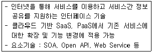
- 서비스 프로비저닝
- 오픈 인터페이스
- 자원 유틸리티
- 다중 공유모델
(정답률: 54%)
14. 다음 중 클라우드 컴퓨팅의 특징에 대한 설명으로 가장 거리가 먼 것은?
- 컴퓨터 시스템의 유지보수 비용을 줄일 수 있다.
- 웹기반의 통제 인터페이스를 제공한다.
- 각종 컴퓨팅 자원을 가상화 기술로 통합한 것이다.
- 사용자가 디바이스에 접근 시 저장 공간의 제약을 받는다.
(정답률: 74%)
15. 다음에서 설명하는 클라우드 운용 방식은?
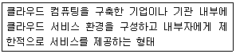
- 퍼블릭 클라우드
- 프라이빗 클라우드
- 퍼스널 클라우드
- 하이브리드 클라우드
(정답률: 71%)
16. 다음 중 클라우드 서비스와 그에 대한 서비스 유형으로 가장 거리가 먼 것은?
- 아마존 웹 서비스 - IaaS
- 구글 앱 엔진 - PaaS
- 네이버 클라우드 - PaaS
- 한글과컴퓨터 넷피스 - SaaS
(정답률: 28%)
17. 다음에서 설명하는 기술은 무엇인가?
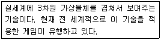
- 증강현실
- 스마트 그리드
- 아바타
- 가상현실
(정답률: 72%)
18. 다음 개인정보보호법 조항을 위반하였을 시 적용되는 벌칙은?
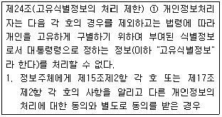
- 5천만원 이하의 과태료
- 3년 이하의 징역 또는 3천만원 이하의 벌금
- 3천만원 이하의 과태료
- 5년 이하의 징역 또는 5천만원 이하의 벌금
(정답률: 52%)
19. 다음 중 개인정보의 유형과 그에 대한 설명이 잘못 짝지어진 것은?
- 민감정보 : 근무부대, 전과기록, 구속기록, 종교단체가입 등
- 소득정보 : 현재 봉급액, 기타소득의 원천, 이자소득 등
- 일반정보 : 이름, 주민등록번호, 출생지, 성별 등
- 통신정보 : 전자우편, 전화통화 내용, 로그파일 등
(정답률: 60%)
20. 개인정보보호법에서 영상정보처리기기를 설치·운영하는 자가 안내판 등을 통해 정보주체에게 알려야 할 정보를 모두 고른 것은?
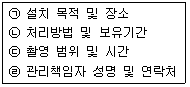
- ㉠, ㉡, ㉢
- ㉡, ㉢, ㉣
- ㉠, ㉢, ㉣
- ㉠, ㉡, ㉣
(정답률: 59%)
21. 저작권법에서 업무상저작물의 저작재산권은 공표한 때부터 몇 년간 존속하는가?
- 30년
- 50년
- 70년
- 90년
(정답률: 69%)
22. 다음 중 저작권법에 대한 설명으로 가장 거리가 먼 것은?
- 건축물·건축 모형·설계도 등도 저작물에 포함된다.
- 2차적저작물은 원저작물을 번역·편곡·변형 등의 방법으로 작성한 창작물이다.
- 사실의 전달에 불과한 시사보도는 저작물로 보호받지 못한다.
- 데이터베이스제작자의 권리는 데이터베이스 제작을 완료한 때부터 발생하며, 제작한 해부터 5년간 존속한다.
(정답률: 38%)
23. 다음 중 전자서명법 제4조의 규정에 의하여 지정된 공인인증기관이 아닌 것은?
- 금융결제원
- 한국예탁결제원
- 한국정보인증㈜
- ㈜코스콤
(정답률: 56%)
24. 다음 중 컴퓨터 운영체제의 운영방식으로 가장 거리가 먼 것은?
- 일괄처리방식
- 압축저장방식
- 시분할처리방식
- 다중프로그래밍방식
(정답률: 70%)
25. 다음 중 나머지와 성격이 다른 응용프로그램은?
- EzPhoto
- Photoshop
- GIMP
- FRAPS
(정답률: 68%)
26. 다음 중 유무선 인터넷 접속기술에 대한 설명으로 가장 거리가 먼 것은?
- 전용선은 미국 규격인 T 시리즈와 유럽 규격인 E 시리즈로 구분한다.
- 네트워크 장비 중 CSU는 디지털 데이터를 디지털 신호로 변환해 주는 역할을 한다.
- ISDN의 채널 종류는 B채널, D채널, H 채널이 있다.
- 케이블 TV망은 유동 IP주소 방식을 채택하고 있다.
(정답률: 37%)
27. 다음 설명에 해당하는 스크립트 언어는?
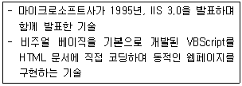
- Python
- JSP
- JavaScript
- ASP
(정답률: 25%)
28. 다음 중 URL의 구조에 대한 설명으로 가장 거리가 먼 것은?
- HTTP는 80번 포트를 사용하며 URL 표현시 반드시 표기해야 한다.
- URL의 주소표현에서 프로토콜의 포트번호를 지정할 수 있다.
- 서비스를 제공하는 서버에 있는 파일들의 위치를 명시하기 위한 것이다.
- URL의 기본구성에는 프로토콜을 명시할 수 있다.
(정답률: 55%)
29. 다음 중 프로토콜과 잘 알려진 포트번호(Well-Known Port)가 잘못 짝지어진 것은?
- HTTP – 80
- POP3 - 21
- SMTP – 25
- DNS - 53
(정답률: 70%)
30. 다음 중 그래픽 기반의 홈페이지 저작도구가 아닌 것은?
- 나모 웹에디터
- 핫도그
- 드림위버
- 프론트 페이지
(정답률: 76%)
31. 다음 중 HTML 태그의 종류별 항목이 잘못 연결된 것은?
- 문서속성 태그 : <br>, <Hx>, <a>
- 목록 태그 : <dl>, <li>, <ol>
- 테이블 태그 : <tr>, <td>, <caption>
- 문자속성 태그 : <center>, <align>, <p>
(정답률: 27%)
32. 다음 설명에 해당하는 멀티미디어 용어는?
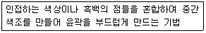
- 렌더링
- 디더링
- 오버프린트
- 모델링
(정답률: 43%)
33. 다음 중 벡터 이미지에 해당하는 특징을 모두 고른 것은?
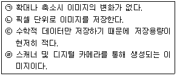
- ㉡, ㉣
- ㉠, ㉢, ㉣
- ㉠, ㉢
- ㉠, ㉣
(정답률: 30%)
2과목: 인터넷 자원 탐색
34. 다음 중 웹 브라우저에 대한 설명으로 가장 알맞은 것은?
- 동시에 여러 개의 웹 브라우저를 사용할 수 있다.
- 같은 홈페이지를 자주 방문할수록 로딩 시간이 많이 소요된다.
- 일반적으로 주소 표시줄에 IP 주소를 입력하여 데이터를 요청한다.
- 하이퍼미디어 정보를 불러오기 위해서 별도의 설정과정이 필요하다.
(정답률: 74%)
35. 다음 설명하는 웹 브라우저의 기능으로 옳은 것은?
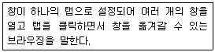
- 크로스 브라우징
- 인프라이빗 브라우징
- 커서 브라우징
- 탭 브라우징
(정답률: 71%)
36. 다음 보기에서 텍스트 기반의 웹 브라우저에 해당하는 것을 모두 고른 것은?
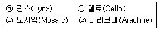
- ㉠, ㉡
- ㉠, ㉣
- ㉡, ㉢
- ㉢, ㉣
(정답률: 62%)
37. 다음 설명에 해당하는 웹 브라우저로 알맞은 것은?
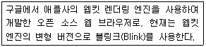
- 크롬
- 비발디
- 사파리
- 오페라
(정답률: 80%)
38. 다음은 공용 PC 활용 시 개인 정보를 보호하기 위한 방법이다. 이를 위해 공통으로 활용되는 인터넷 익스플로러의 메뉴로 알맞은 것은?
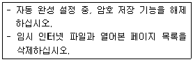
- [속성]
- [도움말]
- [페이지]
- [인터넷 옵션]
(정답률: 65%)
39. 다음 중 크롬 브라우저를 이용하여 다운로드 받았던 파일을 확인하려 할 때 사용할 수 있는 단축키로 알맞은 것은?
- Ctrl + Shift + D
- Ctrl + Shift + N
- Shift + D
- Ctrl + J
(정답률: 37%)
40. 다음 설명에 해당하는 인터넷 익스플로러의 기능은?
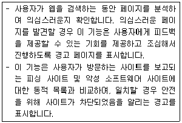
- 추적 방지 켜기
- ActiveX 필터링
- SmartScreen 필터
- Do Not Track 요청 켜기
(정답률: 74%)
41. 다음 설명에 해당하는 인터넷 익스플로러의 인터넷 영역 보안 수준은?
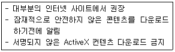
- 높음
- 보통
- 최소
- 약간 높음
(정답률: 57%)
42. 다음 중 크롬 브라우저에 대한 설명으로 옳은 것은?
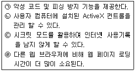
- ㉠, ㉡
- ㉠, ㉢
- ㉡, ㉣
- ㉢, ㉣
(정답률: 89%)
43. 크롬 브라우저에서 화살표가 가리키고 있는 버튼을 표시하기 위한 메뉴로 알맞은 것은?
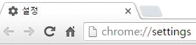
- 확장 프로그램
- 설정 - 모양
- 정보
- 설정 – 시작 그룹
(정답률: 50%)
44. 크롬 브라우저에서 화살표가 가리키고 있는 기능을 실행하기 위한 단축키로 옳은 것은?
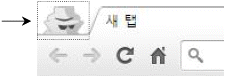
- Ctrl + P
- Ctrl + N
- Ctrl + Shift + N
- Space Bar + Shift + N
(정답률: 74%)
45. 다음 설명에 해당하는 파이어폭스 브라우저의 기능은?
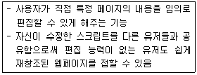
- Greasemonkey
- Adblock
- Performancing
- IE Tab
(정답률: 49%)
46. 다음 보기에서 검색엔진이 갖추어야 할 조건을 모두 고른 것은?
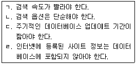
- ㉠, ㉡
- ㉠, ㉢
- ㉡, ㉣
- ㉢, ㉣
(정답률: 82%)
47. 동일한 검색어로 검색 시 검색 엔진마다 다른 검색 결과가 나오는 이유로 적절한 것은?
- 인터넷 검색 속도가 매번 다르기 때문이다.
- 사용자 컴퓨터의 사양에 대한 차이 때문이다.
- 검색엔진의 데이터베이스 양이 다르기 때문이다.
- 웹 브라우저의 버전 또는 브라우저 간 실행 속도 차이 때문이다.
(정답률: 82%)
48. 다음 설명에 해당하는 검색엔진의 구성요소와 가장 거리가 먼 것은?
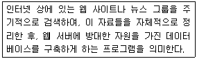
- Crawler
- Wanderer
- Catalog
- Scooter
(정답률: 34%)
49. 다음 중 검색엔진의 로봇이 주기적으로 방문하는 대상을 모두 고른 것은?
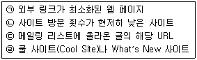
- ㉠, ㉡
- ㉠, ㉣
- ㉡, ㉣
- ㉢, ㉣
(정답률: 58%)
50. 다음 중 로봇이 웹에 미치는 영향으로 가장 알맞은 것은?
- 로봇으로 인해 가장 많이 피해를 보는 것은 HTML 문서이다.
- 국가 주요 기관의 웹 서버를 다운시키는 주요인이 되고 있다.
- 로봇의 검색 엔진 최적화로 인해 네트워크 전체 속도를 향상 시킨다.
- 네트워크를 돌아다니며 잦은 내용 검색으로 인한 트래픽을 발생시킬 수 있다.
(정답률: 70%)
51. robots.txt 파일을 이용한 로봇 배제 방법 중 '모든 문서에 접근 배제'를 설정하기 위한 명령어로 알맞은 것은?
- User-agent: *
Disallow: / - User-agent: *
Disallow: * - User-agent: allrobot
allow: / - User-agent: allrobot
Disallow: *
(정답률: 61%)
52. 다음 검색엔진 구축 방식 중, 매뉴얼 인덱스 방식의 특징을 모두 고른 것은?
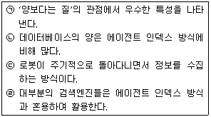
- ㉠, ㉡
- ㉠, ㉣
- ㉡, ㉣
- ㉢, ㉣
(정답률: 64%)
53. 다음 중 주제별 검색엔진에 대한 설명을 모두 고른 것은?
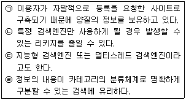
- ㉠, ㉡, ㉣
- ㉠, ㉣
- ㉡, ㉣
- ㉠, ㉢, ㉣
(정답률: 35%)
54. 다음 상황에 따른 조회율과 잡음률이 알맞게 표시된 것은?
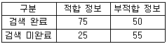
- 조회율: 75%, 잡음률: 60%
- 조회율: 60%, 잡음률: 75%
- 조회율: 75%, 잡음률: 40%
- 조회율: 40%, 잡음률: 60%
(정답률: 33%)
55. 다음 설명에 해당하는 포털사이트 다음의 서비스 명칭은?
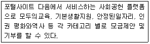
- 브런치
- 플레인
- 같이가치
- 스토리펀딩
(정답률: 56%)
56. 다음 설명에 해당하는 포털사이트 네이버의 서비스 명칭은?
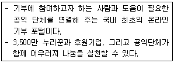
- 해피빈
- 모두
- V Live
- 폴라
(정답률: 68%)
57. 구글 검색엔진에 다음과 같은 검색어를 넣고 검색하였을 때, 예상되는 검색결과는?
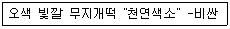
- '오색 빛깔 무지개떡'의 한 문구를 정확히 포함하며, '천연색소'라는 단어를 정확히 포함하고, '비싼'이란 단어를 포함한 결과
- '오색 빛깔 무지개떡'의 한 문구를 정확히 포함하며, '천연색소'라는 단어를 제외하고, '비싼'이란 단어를 포함한 결과
- '오색', '빛깔', '무지개떡'의 단어를 각각 포함하며, '천연색소'라는 단어를 정확히 포함하고, '비싼'이란 단어는 제외한 결과
- '오색', '빛깔', '무지개떡'의 단어를 각각 포함하며, '천연색소'라는 단어를 제외하고, '비싼'이란 단어를 정확히 포함한 결과
(정답률: 69%)
58. 다음 중 정보검색의 개념에 대한 설명으로 가장 거리가 먼 것은?
- 데이터베이스나 인터넷의 수많은 홈페이지에 존재하는 공개된 정보를 대상으로 필요한 정보를 수집하는 일을 의미한다.
- 관련된 전문 데이터베이스가 어디에 있는 지 파악하는 것이 좋다.
- 리키지를 최소화 할 수 있도록 검색한다.
- 검색엔진을 통해 인터넷상의 모든 정보를 찾아볼 수 있다.
(정답률: 69%)
59. 다음은 검색엔진에서의 정보검색 요소 중 어떠한 것에 대한 설명인가?
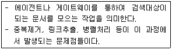
- 검색
- 색인
- 수집
- 추출
(정답률: 43%)
60. 다음 중 효과적인 정보검색 방법을 모두 고른 것은?
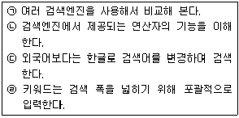
- ㉠, ㉡
- ㉠, ㉣
- ㉡, ㉣
- ㉢, ㉣
(정답률: 67%)
61. 다음 설명은 인터넷 정보관리사의 역할 중 어떠한 것에 해당되는가?
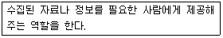
- 정보 분석가
- 정보 상담자
- 정보 중개인
- 정보 전문가
(정답률: 83%)
62. 자연어 검색 시 '불용어'에 해당하는 단어를 밑줄 친 것으로 가장 알맞은 것은?
- 비타민이 풍부한 과일은 무엇일까
- 잠실역까지 가는 지하철 노선도는
- The distance from Seoul to London
- 한국정보통신진흥협회에서 주관하는 자격시험
(정답률: 79%)
63. 다음 중 검색어로 사용되는 단어의 유의어, 동의어, 반의어 등을 계층적·종속적인 관계로 나타내주는 용어 사전을 뜻하는 것은?
- Leakage
- Stop Word
- Thesaurus
- Garbage
(정답률: 57%)
64. 다음 중 인터넷 정보원에 대한 설명으로 가장 알맞은 것은?
- 데이터베이스는 1차 정보에 해당한다.
- 2차 정보는 1차 정보를 종합하여 이해하기 쉽도록 내용을 요약하거나 재편성하여 제공하는 정보원을 뜻한다.
- 3차 정보는 종래에는 없었던 새로운 정보를 의미한다.
- 연구를 하면서 쉽게 접근할 수 있는 정보는 주로 3차 정보이다.
(정답률: 52%)
65. 다음 중 정보의 정보원에 따른 분류 중 1차 정보에 해당하는 것을 모두 고른 것은?
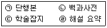
- ㉠, ㉡
- ㉠, ㉢
- ㉡, ㉣
- ㉢, ㉣
(정답률: 44%)
66. 다음 설명에 해당하는 인터넷 정보원으로 옳은 것은?
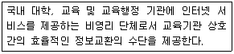
- 통계청
- IPDL
- KISS
- KREN
(정답률: 52%)
3과목: 인터넷 윤리
67. 다음 중 인터넷 윤리학의 기능에 속하지 않는 것은?
- 처방 윤리
- 지역 윤리
- 세계 윤리
- 변혁 윤리
(정답률: 70%)
68. 다음 중 버지니아 셰어의 네티켓 핵심원칙에 해당되지 않는 것은?
- 현재 자신이 어떤 곳에 접속해 있는지 알고 그곳 문화에 어울리게 행동하라
- 인간임을 기억하라
- 다른 사람의 실수가 있으면 바로 신고하여 피해를 막아라
- 실제 생활과 똑같은 기준과 행동을 고수하라
(정답률: 73%)
69. 다음 중 인터넷 윤리의 4가지 도덕 원리에 해당되지 않는 것은?
- 책임
- 존중
- 상호작용
- 해악금지
(정답률: 61%)
70. 다음 중 채팅 네티켓으로 가장 거리가 먼 것은?
- 이모티콘이나 기호 등의 사용을 삼가고 친절 하고 미소를 자아내는 대화를 유도한다.
- 만나고 헤어질 때에는 인사를 한다.
- 불건전한 대화는 하지 않는다.
- 광고, 홍보 목적으로 고의로 악용하지 않는다.
(정답률: 72%)
71. 다음 중 프로그램 불법복제, 불법사이트 운영, 개인정보침해 등과 같이 사이버공간이 범죄의 수단으로 사용되는 것을 가리키는 말은?
- 사이버 테러형 범죄
- 불법 사이버 범죄
- 일반 사이버 범죄
- 사이버 불링 범죄
(정답률: 38%)
72. 다음 중 수신자의 사전 동의를 얻어야 메일을 발송할 수 있도록 하는 방식을 가리키는 말은?
- 에스크로 제도
- 옵트-인 제도
- 정보통신망법 임시조치제도
- 전자상거래 보호제도
(정답률: 73%)
73. 다음 중 사이버 범죄 피해자가 되지 않기 위한 준수사항으로 가장 거리가 먼 것은?
- 개인정보 관리는 남녀의 구분이 어려운 ID나 대화명을 이용한다.
- 온라인을 통해 알게 된 사람을 만나려면 꼭 주변에 미리 알린다.
- 원하지 않는 메일이 오면 수신거부 의사를 밝히는 답장을 한다.
- 상대방의 유혹에 반응하지 않는다.
(정답률: 57%)
74. 다음 중 해킹 프로그램의 일종으로 네트워크를 통해 상대방의 시스템에 기생하여 모든 활동을 유출시키며불법으로원격통제가가능하게하는것은?
- 메타스플로잇
- 백오리피스
- 디도스 공격
- 와이어샤크
(정답률: 39%)
75. 다음 중 인터넷 중독의 원인으로 가장 거리가 먼 것은?
- 사이버 공간의 특성
- 정신과적 요인
- 대면성
- 인간의 사회적, 심리적인 욕구
(정답률: 74%)
76. 다음 중 인터넷 중독의 단계를 순서대로 바르게 나열한 것은?
- 호기심 ⟶ 현실탈출 ⟶ 대리만족
- 호기심 ⟶ 대리만족 ⟶ 현실탈출
- 현실탈출 ⟶ 호기심 ⟶ 대리만족
- 현실탈출 ⟶ 대리만족 ⟶ 호기심
(정답률: 80%)
77. 다음 중 청소년 계정으로 게임에 접속하여 2 시간이 지나면 자동으로 종료되고 10분 뒤 1회에 접속이 가능하도록 하여, 청소년 사용자의 게임 이용 시간을 제한하는 제도는?
- 옵트아웃 제도
- 피로도 시스템
- 셧다운제
- 쿨링오프 제도
(정답률: 64%)
78. 다음 중 인터넷 중독에 빠져드는 사회문화적 요인으로 가장 거리가 먼 것은?
- 건전한 놀이 부족
- 가족과의 여가 활동 부족
- 사회문화적 통제시스템 향상
- 급속한 사회적 변화
(정답률: 66%)
79. 다음 중 인터넷게임중독을 예방하기 위한 것과 가장 거리가 먼 것은?
- 게임시간을 정해놓는다.
- 온라인 친구와 많은 대화를 한다.
- 식사, 수면, 학습시간을 지키며 게임한다.
- 인터넷게임일지를 기록한다.
(정답률: 76%)
80. 다음 중 킴벌리 영이 분류한 인터넷 중독의 유형에 속하지 않는 것은?
- 사이버 채팅 중독
- 네트워크 강박증
- 정보 과부하
- 컴퓨터 중독
(정답률: 10%)